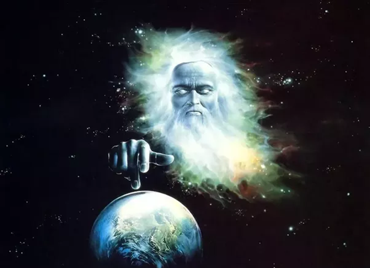
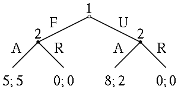
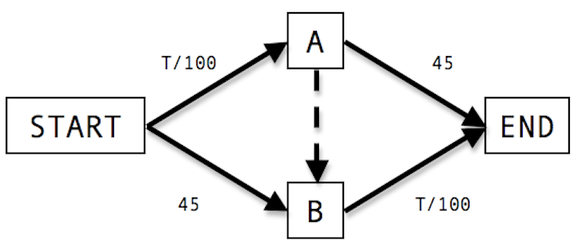
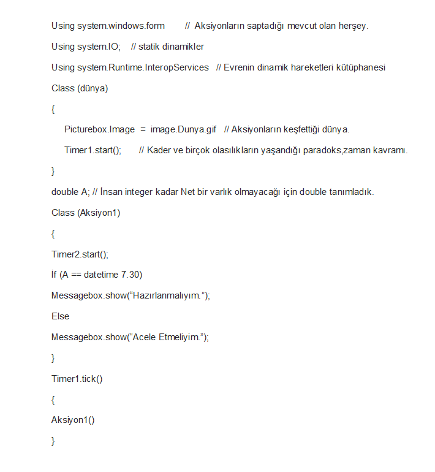

“ Tanrı, eşsiz bir programcı, evren geniş bir kod satırı, kelimeler muazzam bir söz dizilimi, bizler aksiyonları isek, aksiyonlar da küçük Dünyalarının Tanrılarıdır. “
Metafiziksel kurgu ve Yazılımsal olgu paradigmaları makalesini hazırlamamdaki amaç, yaratıcı ve yaratılmış olan eylemlerin birbirlerine olan ilişkileri ve ortak noktalarını saptamamdır. Bu ilişkiler, yaratıcı ve yaratılan arasındaki bağın iç içe zincirlenmiş birer döngü olduklarını, belirli olasılık ve mantık evresinde sonsuz durumlarının olduğunu, bir eylemi sonuca dönüştürürken yaratıcı faktörü ile birlikte sonsuz uzay evreni sayesinde olasılıkların durumlara göre işleyişini konu aldım. Bu saptamaları yaparken, tüm bu olguların tabii biçimde yazılım dünyasıyla bir etkileşim ve fonksiyonel yönden ortak noktalarının olduğunun farkına vardım. Yazılım dünyasının ve yazılımın temelinde bulunan algoritmanın aslında yaratıcının, yaratma sanatındaki işleyişinin ve yaratma potansiyelinin kusursuzluğunu her ne kadar biz aksiyonlar idrak edemeyip, belirli bir bölümünün farkında olsak bile bizlerin, aslında tam anlamıyla bir fonksiyon makinesi gibi, fakat ( karar veren, düşünebilen, hissedebilen) hisli birer makine olduğumuzu gözler önüne seriyor.
Metafizik Nedir ? : varlık, varoluş, evrensel, özellik, ilişki, sebep, uzay, zaman, tanrı, olay gibi kavramlar üzerinde duran, çeşitli ilkeleri olan, Türkçeleştirilmiş haliyle “ Fizikötesi “ anlamına gelen, felsefi bir disiplindir. Varlıkları birbirinden ayıran özellikleri bir tarafa bırakınca geriye kalan ilke ve nedenler metafiziğin konusudur. Neyin gerçekten var olduğu ve görünüşün ardındaki gerçeği arar.
Evren Nedir ? : Evren ya da kâinat, uzay ve uzayda bulunan tüm madde ve enerji biçimlerini içeren bütünün adıdır. Pozitif bilimler açısından evren, gök cisimlerini barındıran uzay ve uzayda yer alan her şeyin toplamıdır. Dolayısıyla modern fizik açısından evren, sonsuz boşluk ve bu boşlukta yer alıp da var olduğunu bildiğimiz bütün atomik âlemlerdir.
Metafizik Nedir ? : varlık, varoluş, evrensel, özellik, ilişki, sebep, uzay, zaman, tanrı, olay gibi kavramlar üzerinde duran, çeşitli ilkeleri olan, Türkçeleştirilmiş haliyle “ Fizikötesi “ anlamına gelen, felsefi bir disiplindir. Varlıkları birbirinden ayıran özellikleri bir tarafa bırakınca geriye kalan ilke ve nedenler metafiziğin konusudur. Neyin gerçekten var olduğu ve görünüşün ardındaki gerçeği arar.
Yazılım Nedir ? : Yazılım, elektronik aygıtların belirli bir işi yapmasını sağlayan programların tümüne verilen isimdir. Bir başka deyişle, var olan bir problemi çözmek amacıyla bilgisayar dili kullanılarak oluşturulmuş anlamlı anlatımlar bütünüdür. Yazılım için çeşitli diller mevcuttur.
Metafizik dışında bulunan tüm olgular, pozitif bilimin kabul ettiği, doğruluğunu tartışmak yerine üstüne birikim yapılarak ilerleyen bilimsel gerçeklerdir. Öyle ki ; bunun zıttı durumunda metafizik olgusunun da bilime dahil edilmesi gerekirdi. Fakat, bilimsel gerçekler somut bir kanıt sunduğundan daha geçerli ve kabul edilebilir olgulardır. Metafizik ise doğruluğu ispatlanamayan adından da anlaşılacağı gibi “ Fizikötesi “ olgulardır.
Yazılım dünyası, evrenin yaratılışı, kronolojik ve sistematik olarak iç içedir. Bunun sebebi, evrenin yaratılışında sistematik bir birikim ve hiyerarşik bir düzen perspektifi içinde yaratılışıdır. Yani evrenin yaratılışında sürekli neden-sonuç ilişkisi vardır. Yazılım dünyasında da oluşturulan kod öbekleri, mikro ve makro kodlar, bir projeyi bütün halinde neden ve sonuç ilişkisi ile incelememizi sağlar. Yani bir projeyi, neden, niçin, faydaları, kullanım alanları gibi sınıflandırmalara tabii tutmak tıpkı evrenin yaratılışındaki neden ve sonuç ilişkisi gibi olgularla karşılaştırdığımızda aralarındaki yapısal bağları görmemek olanaksızdır.
Metafizik her ne kadar bilimsel bir gerçeklik olarak bilim dünyasında kabul görmese de, günlük hayatımızda sıkça kullandığımız, belki de inandığımız olgulardır. Metafizik olgulara örnek vermek gerekirse din ve ruh kavramını ekleyebiliriz. Dünya üzerinde ki dinlerin coğrafi olarak farklılıkları olsa da aslında ortak bir noktaları vardır. Herhangi bir dine mensup kişilerin kendilerince yaratıcıları vardır. Hepsinin ortak noktaları yaratmaktır, fakat farklılıkları betimleme ve isimleridir.
" Kararsızlık, sonsuz olasılıkları doğurur. "
Ruh ve Yazılım’ın ortak paydaları : Ruh , ilahi dinlerde varlığın özü ve kaynağı olarak tanımlanabilir. Ruh, zamandan ve mekandan bağımsızlığı dolayısıyla özgür ve kestirilemeyen bir olgudur. Yaratıcı, Ruh kavramını ve varlığını yaratırken somut varlık olan canlı organizmasının içine işlemiştir. Ruh kavramının işleyişi ile ruhun organizmaya kazandırdığı kişisel özelliği de yaratıcı es geçmemiştir. Bu durumun benzerliğini yazılım dünyası içinde söylemek mümkündür. Kendi küçük Dünyasının tanrısı olan programcı, bu özgür dünyada makro kodları (organizma) oluşturabilmek için öncelikle mikro kodları (ruh) oluşturmalıdır. Oluşturduğu mikro kodlara işlevselliğini kazandırdıktan sonra sınıflandırıp, kütüphaneler ve sınıflar halinde makro kodu tasarlamalıdır. Makro kodu tasarlarken projesinin işlevselliğini yerine getirebilmesi için bu iki olgunun uyumluluğuna dikkat etmelidir ki oluşturduğu proje mükemmelliğe kavuşsun.
Oluşturduğu mikro projenin son safhasından, makro projesinin kalıbını sindirmiş ve idrak etmiş programcı, artık makro kodlarını, yani işin tasarım kısmını iyi tasarlamalıdır. Küçük Dünyasının Tanrısı olan programcı yarattığı proje evrenini o kadar ince düzenlemelidir ki, kendi dünyasında kullandığı her mikro kodların uyum içinde çalışmasını sağlayan söz dizilimleri (kelimeler) işlevselliğini yitirmesin.
Neredeyse tüm ilahi dinlerde, varlıktan önce, ruhun yaratılışına inanılır. Yaratıcı evreni tasarlarken, işe ilk önce kendisine biat eden ruhlardan (mikro kodlar) başlamıştır. Yarattığı ruhlar programcının projesi için temel nitelikteki dinamik yapılardır. Öyle ki bu yapılar kendi iradeleri, düşünce sistemleri, özgürlükleri, sınırları ve tarzı olan ama yaratıcının yarattığı anda ki kadar saf ve duru yapıda olmayan mekan ve zaman dan bağımsız yapılardır.
Tam bu noktada, aslında yaratıcının ne kadar mükemmel olduğunu görebiliriz. Yaratıcı yarattığı ruhlara (mikro kodlara) , kendi seçim haklarını verebilirken, küçük Dünyasının tanrıları olan programcılar ,oluşturduğu mikro kodlara ancak derleyicinin ona sunabildiği imkan neticesinde irade gücü verebilir. Bu yüzdendir ki asıl yaratıcıya programcı, bizlere ise aksiyonlar (eylemler) sıfatı yüklensin.


- 
Neredeyse tüm ilahi dinlerde, varlıktan önce, ruhun yaratılışına inanılır. Yaratıcı evreni tasarlarken, işe ilk önce kendisine biat eden ruhlardan (mikro kodlar) başlamıştır. Yarattığı ruhlar programcının projesi için temel nitelikteki dinamik yapılardır. Öyle ki bu yapılar kendi iradeleri, düşünce sistemleri, özgürlükleri, sınırları ve tarzı olan ama yaratıcının yarattığı anda ki kadar saf ve duru yapıda olmayan mekan ve zaman dan bağımsız yapılardır.
İlahi Dinlerdeki Kader kavramı ve Yazılım Dünyasındaki olasılıklar : Kader kavramı ilahi dinlerde, ( bunlara ilahi olmayan dinleri de dahil edebiliriz ), var olan bir paradoks mantığıdır. Evrenin ve aksiyonların yaratılışında milyonlarca belki de biz aksiyonların anlayıp, saptayamayacağı derecede sonsuzluk evresi vardır. Bir olayın işleyişini bir sonuca bağlamak sonsuz uzay evreninde imkansızdır. Çünkü; bir olayın sonucundan doğabilecek milyonlarca farklı sonuçlar vardır. Buna örnek vermek gerekirse, bir kelebeğin kanat çırpışındaki optimum denge, evrenin herhangi bir köşesini etkileyebilir. Avusturya’dan kanat çırpan bir kelebek, ABD eyaletlerinden Dallas’taki herhangi bir bölgede hava akışının maksimum dengesini bozabilir. Bu durumda afetler ve doğal felaketler meydana gelebilir. Bu olguya bilimsel açıdan kelebek etkisi denilir. Aynı durum yazılım Dünyası için de geçerlidir ki, yazılım dünyasında kendi dünyasının tanrısı olan aksiyonlar oluşturduğu mikro ve makro kodların, projeye olan işleyişi milyonlarca belki de milyarlarca farklı olasılığı doğurabilir. Şöyle ki; projesini hazırlayan aksiyon bağıl dengeyi oluşturmak için farklı bir sınıf ve kütüphanenin işleyişini, hazır kod bloğu veya sınıflar halinde istediği şekilde istediği gibi kullanabilir. Fakat, kullandığı bu normlar projenin boyutuna göre olasılık kazanacaktır ki, yaratıcı ile kıyasladığımız da bir aksiyon belirli sayıda olasılık oluşturabilsin.
Kurduğum bu teoremi, desteklemek adına bir örnek daha vermek konuya hakimlik ve algılanabilirlik açısından katkı sağlayacaktır.
Bildiğiniz gibi yazılım dünyasında, özellikle dijital oyun sektöründe yapılan oyunların final kısımlarında, karakterin işleyişine göre farklı final sahneleriyle karşılaşabiliriz. İşte bu anda farklı final sahnelerinin karakterin ve karakteri kullanan kullanıcının insifiyatinde geliştiğini söylemek gerekir. Bu örnekleme, aksiyonların tam anlamıyla sonsuz olasılıkları yaratıcı kadar iyi zincirleyemediği ve birbirine bağıl fonksiyonların içeriğini tam manasıyla kestiremediğinin kanıtıdır.
Evrenin ve sonsuz olan evrenler zincirinin, kader paradoksu ile yazılım dünyasına etki etmesi, tanrının ve tanrının bahşettiği metafiziksel soyut varlıkları bir arada tutan, makro ve mikro kodlar vasıtasıyla kod satırlarına sığdırması, bunu yaparken de kusursuz ve mükemmel bir programcı olması, aksiyonların tanımlayamayacağı derece bir proje olsa gerek.
Ekonomi Bilimi, Kader ve Yazılım Üçlüsü : Ekonomi Bilimi, Kader ve Yazılım üçlüsü kavramlarını açıklamadan önce, ilk tanımımız olan Ekonomi bilimini tanımlayalım;
Ekonomi Bilimi; bir bilim dalı olarak, kaynakların sınırlı, buna karşılık insanoğlunun ihtiyaçlarının sonsuz olması nedeniyle, çeşitli sorulara yanıt arayan bir bilim dalı olarak ortaya çıkmış ve gelişme göstermiştir. Ekonomi Bilimi, bu yönüyle kısıtlı kaynaklar ile hangi malın, kimin için, ne miktarda üretileceği ve kimler tarafından tüketileceği sorularına ve fiyatın oluşum mekanizmasını algılamaya çalışan bir bilim dalıdır.
Ekonomi Biliminin Bilim dalı olmasında ki en büyük neden, Ekonomi Biliminin de kendi işleyişine birikim katıp ilerlemesidir.
Tıpkı makalemi hazırlama amacımda olduğu gibi, Ekonomi Bilimine de farklı çağrışımlar üretmek adına fikirler geliştirilmiş veya ortaya yoktan fikirler sunulmuştur. Bu fikirlerden biriside ünlü Matematikçi ve Ekonomici John Forbes Nash’tir. John Forbes Nash; oyun kuramında ve diferansiyel geometri alanında köklü değişiklikler yapmış; aynı zamanda kısmi diferansiyel denklem üzerinde de çalışmış ABD'li matematikçidir. ABD’li John Forbes Nash’in en ünlü kuramlarından birisi olan oyun teorisi, hazırladığım tezi destekler niteliktedir.
Oyun Teorisi; İstatistik biliminin, sosyal bilimlerde (en fazla ekonomide olmak üzere), biyoloji, mühendislik, politik bilimler, bilgisayar bilimleri (temel olarak yapa zekâ çalışmaları üzerinde) ve felsefede kullanılan bir dalıdır. Oyun kuramı, bireyin, başarısının diğerlerinin seçimlerine dayalı olduğu seçimler yapması olan bazı stratejik durumların matematiksel olarak davranış biçimlerini yakalamaya çalışır. İlk başlarda bir bireyin kazancının ötekinin zararına olduğu (sıfır toplamlı oyunlar) yarışmaları çözümlemek için geliştirilmişse bile, daha sonradan birçok kısıtlamaya dayanan çok geniş bir etkileşim alanını incelemeye başlamıştır. Bugün, "oyun kuramı, 'sosyal' kelimesinin geniş anlamda insan ve insan-dışı oyuncuları (bilgisayarlar, hayvanlar ve bitkiler) kapsayacak biçimde tanımlandığı, sosyal bilimlerin rasyonel yönü için bir 'birleşik alan' kuramı veya bir tür şemsiyedir.
Oyun Teorisi’nin genel tanımı bu şekildedir. Oyun teorisinin işleyişi ve sonsuz olasılık zincirlerinin, felsefik boyutu da etkilemesi ve bu şekilde katmanlı ilerlemesi yazılım dünyasıyla benzerdir.
Oyun Teorisi ve Oyunların gösterimi kuramını yakından incelersek;
Oyunların Gösterimi; Oyun kuramı tarafından çalışılan oyunlar iyi tanımlanmış matematiksel nesnelerdir. Bir oyun, bir oyuncular kümesinden, bu oyuncuların uygulayabileceği bir eylem kümesinden (ya da stratejilerden) ve her strateji bileşkesi için tanımlanmış sonuçlardan meydana gelir. En işbirlikçi oyunlar karakteristik fonksiyon biçiminde sunulurken, yaygın ve normal biçimler işbirlikçi olmayan oyunlar için kullanılır.

Oyun Teorisi ve Oyunların gösterimi kuramını yakından incelersek;
Yukarıdaki resimde gösterilen oyunda iki oyuncu vardır. Oyuncu 1 ilk hareket eder ve "F" ya da "U"’yu seçer. Oyuncu 2,Oyuncu 1'in hareketini görür ve "A" ya da "R"'yi seçer. Oyuncu 1'in U'yu seçtiğini varsayalım, bu durumda Oyuncu 2 A'yı seçer, sonra Oyuncu 1, 8 alır ve Oyuncu 2, 2 alır. Yaygın biçim eşzamanlı-eylem oyunlarını ve kısmı bilgiye sahip oyunları temsil edebilir. Bu, iki farklı ucu bağlayan, aynı bilgi kümesine (örneğin; oyuncuların hangi noktada olduklarını bilmedikleri) ait olduklarını gösteren bir noktalı çizgiyle yapılır ya da bunun çevresine kapalı bir çizgi çizilir.
Yukarıdaki Oyun kuramının yaygın biçimde kullanılan kısmıydı. John Forbes Nash'in kurduğu işleyiş ile Ekonomi Bilimine, Bilgisayar Bilimine hem de Matematik Bilimine katkı yapmıştır. Peki, bu yapmış olduğu katkı sonsuz uzay evreninde, evrenin veri tabanında bulanan kıymetli datalar halini mi aldı, yoksa sonsuz bilgi çöplüğünde ki kestiremeyen hiçlik havuzunda ki yerine mi gitti. Bu sorunun nihai cevabını aksiyonlar kullandıkları Ekonomi sistemleri ile vermişlerdir.
Verdiğim örnekleme de John Forbes Nash’in kuramı ve teorileri evrendeki sonsuz varoluştan sadece mikro tanecik kadarıydı. Birçok önemli düşünür Ekonomi Bilimine katkı sağlamış, Ekonomi Bilimiyle Matematik Bilimini sentezleyip ortaya aksiyonların faydalanacağı veriler üretmişlerdir.
İlahi dinlerde var olan kader mantığı da bu teorilerin kullanım havuzudur. Şöyle ki; John Forbes Nash’in kurduğu bu teori biz aksiyonlar için Bilimsel açıdan bir öngörü ve olguyken, ilahi dinlerde ki kader paradoksun da bu süreç John Forbes Nash’in sonsuz olasılık ve imkanların dan doğan bir fikirdi. Yani, John Forbes Nash zihnindeki bu fikri üretirken, amaçladığı mesajın çok ötesinde göndermeler yapabilirdi ve bu işleyiş yaratıcının potansiyeline göre sonsuz olasılık doğurabilirdi. Tam burada John Forbes Nash zihnindeki mükemmel algoritmik tasarımını ve öngörüsünü kullanarak uygun bir proje tasarlamış ve bir o kadar da kullanışlı olan söz dizilimlerinin vasıtasıyla aksiyonlara aktarmıştır. John Forbes Nash’in fikri ( tasarlama, proje taslağı, başlangıç, gelişim ve bitiş) gibi süreçler, Yazılım Dünyasında ki proje oluşumuyla yakından ilgilidir.
Yazılım Dünyasından bir projenin ve fikrin oluşabilmesi için, öncelikle yapılacak projenin kullanım alanları seçilmelidir. Burada küçük dünyalarının Tanrıları olan aksiyonlar, bu önermeleri dikkate alarak proje tasarlamalıdır ki, tasarladığı proje diğer muhtaç olan aksiyonların ihtiyaçlarını karşılasın ve gelecek dünya da yenilenen mikro kodlara ideal niteliğinde değer taşısın.

Yukarıdaki paradigma, "Braess paradoksu" dur. Paradoks kuramı, Adını Alman matematikçi “Dietrich Braess “ den almıştır. “Trafikte Kara Delik” olarak ortaya atılan teori “Yeni yol yapımı ve trafik sorununu çözmeye yetmemekte, tersine taşıt trafiğinin artmasına neden olmakta, ardından daha fazla yeni yollar yapılmasını zorunlu kılmaktadır” demektedir. Dietrich Braess’in ortaya koyduğu “Trafik Paradoksu”na göre de “Tıkanıklığının yaşandığı kesimlerde trafiği rahatlatmak amacıyla yapılan yol ilavesi tıkanıklığı artırır. Buradaki önemli olan nokta, Dietrich Braess’in yaptıkları değil, ortaya koyduğu fikrin logaritmik ve metafizik yönden insan psikolojisine olan etkisidir. Braess paradoksunun Ekonomi Bilimine Doğru orantıda ilişkisi olmasa bile, dolaylı yoldan ilişkisi vardır. Ekonomi Bilimiyle dolaylı yönden ilişkisi olan bir paradoks ta verdiğim tezi doğrular niteliktedir. Dolayısıyla dolaylı yönden ilişkisi vardır.
Evrenin yaratılışındaki statik düzen ve programlanmaya uyarlanması : Evrenin yaratılışı, uzay, zaman ve mekan farkları, günümüz bilim imkanları neticesiyle tam olarak keşfedilememiştir. Bunun sebebini bilim adamlarının, Evrenin sürekli şekilde genişlediği tezini öne sürerek savunmuşlardır.
Bu konuda bilimin yapabildikleri ile değil, mevcut bilimin verilerine göre örneklendirme yapmak, tezin işleyişine yön verecektir.
Mevcut paradigmalara benzetme yapılarak, bir insanın uykudan uyandığı ve daha sonrası yaptığı eylemleri C# dilinde uyarlamaya çalıştım.

Mevcut programlama kodu, yalnızca bir aksiyonun zihinde, sabah uyanıp işlerini yapmak adına harekete geçmesini konu alıyordu. Bu örnekleme de aksiyonun uykudan uyanamama veya çevre ile etkileşimde farklı sonuçların olacağı ihtimalleri göz önünde bulundurulmalıdır. Fakat, bir aksiyon kararlı bir dinamiğe sahipse, olasılık yüzdesi negatif değerlere doğru geriler. Bu yüzden diyebiliriz ki; " Kararsızlık sonsuz olasılıkları doğurur. "
Örnekleme, kısıtlı bir zaman diliminde geçse de, ihtimal ve olasılık kavramlarını tam olarak işleyemedik. Bunun sebebi sonsuzluk tanımının henüz kavranılamamış olmasıdır. En azından aksiyonların henüz kavrayamamış ve sonsuzluğu bir meta ya dahil edemeyişinden kaynaklanmaktır.
Örnekleme kodlarını yaptığımız aksiyonu ele alacak olursak, varsayalım ki bu aksiyon standart ötesi kabul ettiğimiz bir yaşayış tarzına sahip olsun, çoğu insan gibi üretmek adına idealler peşinden koşsun. Bu aksiyon yaşadığı ve çalıştığı ortamlara göre farklı kararlar verecektir.
Varsaydığımız gibi, bu aksiyon standart gerisi bir yaşayışa sahip olsun, günlük yaptığı rutin işler asosyallik derecesinde olduğunu kabul sayarsak, bu aksiyonun hayata dair olasılıkları düşme eğilimindedir.
İlahi ve ilahi olmayan dinlerdeki kutsal metinler ve yazılım : İlahi veya ilahi olmayan dinlerdeki kutsal metinler, yaratıcının aksiyonlara sunmuş olduğu kullanım kılavuzu niteliği taşımaktadır. Şöyle ki; yaratıcı, yarattığı paradoks sal zaman evreninde aksiyonlara kendi kurallarını kabullendirip ona itaat etmesini, kutsal metinlerde aktarmıştır. Yani aksiyon, içinde bulunduğu varoluşta bu emirleri veya yasakları uygulayarak işlevini doğru yapmak, aksiyonun özünde bulunan mikro kodlara zarar gelmemesi adına bu emir ve yasaklara kısmen uyması gerekmektedir.
Olaya varoluş ve yaratılış kavramlarına inanmayan bir aksiyon gözünde bakacak olursak, günlük yaşamda uymamız gereken bir çok toplumsal ve hukuk kuralları vardır. Hukuk kuralları, toplumun düzeni ve oluşacak kaosu engellemek amacında oluşturulmuş yazılı kurallardır. Herhangi bir ilahi inanca sahip olmayan insan kutsal metinlerdeki kurallara uymasa bile, hukuk kurallarına uyması gerekmektedir. Hukuk kuralları dışına çıkan bir aksiyon, bulunduğu ulusun yargılama ve ceza hukuku sistemine göre yargılanır ve cezalandırılır.
Yani, bir aksiyonun uyması zorunlu olduğu en az bir kural vardır. İlahi kuralları zorunlu tutmamın sebebi, yaratıcının aksiyona seçim özgürlüğü vermesi ve aksiyonun da irade gücünü kullanarak yaratıcıyı bulması esas alınmıştır.
İşte, tam bu noktada yazılım Dünyası ile yaratıcı arasında ki en büyük fark ortaya çıkıyor. Şu ki, yazılım dünyasındaki aksiyon, yarattığı mikro ve makro kodlara sadece birkaç seçim şansı verirken, yaratıcı yarattığı aksiyonlara sonsuz olasılıklar dahilinde seçim şansı vermiştir.
Her aksiyon, oluşturduğu küçük dünyasının amacını, işleyişini, kullanışını ve anlaşılabilirliğini diğer aksiyonlara aktarabilmek adına projesinde kullanım kılavuzu oluşturur. Yani, aksiyonun projeyi yönlendirme eğilimi tıpkı yaratıcı gibi kendi insifiyatindedir. Fakat, diğer aksiyonların isteklerine göre kullanım şekillerini değiştirebilme eğilimindedir. Aksiyonun bunu yapma ihtiyacı, oluşturduğu küçük dünyasının güncelliğini koruması ve diğer aksiyonların tercihini yükseltmesinden geçer. Yani aksiyon, projesinin kullanılabilirliği ve popüleritesinin kaybolmaması adına kaygı duyar. Konu yaratıcıya geldiğinde, yaratıcı böyle bir kaygı duymaz, yaratıcı; var etmiş, geliştirmiş, zamanı ve işleyişi mikro ve makro kodları oluşturmadan önce tasarlamış, yarattığı varoluş projesinde seçim hakkı vermemiştir. En önemlisi yaratıcı yarattığı projesinin popüleritesi ve güncelliği kaygısı duymaz. Çünkü yaratıcı, projeyi çoktan bitirmiş ve Debug etmiştir. Aksiyonların bu konuda pek bir seçim şansları kalmamıştır. Aksiyonlar ancak Debug edilmiş projede, yaratıcının onlara vermiş olduğu olasılık kadar varlığını sürdürebilir ve kararlarını bu doğrultuda verebilirler.
" Yandaki simge, Rigveda simgesidir. Hinduizmin kutsal metinleri olan Vedalar'ın bir bölümü. Veda'ların ilk bölümü olan Rigveda, aynı zamanda en eski ve en önemli bölümdür. 1028 İlahi içeren Rigveda, tanrılara şükür ve saygı için yazılmış on kitaptan oluşur. Rigveda dünyanın en eski kutsal metnidir. Sadece Hinduizm dinine ait olan rigveda, İslam Dinindeki hadisler ile benzerlik taşır. "
Tanrının statik Formülü :
Ünlü düşünür ve Bilim adamı Albert Einstein, mevcut sözünü söylerken aslında biz aksiyonlara yaratıcı kavramının, yaratılmışlar sınıflarının anlayamayacağı şekilde kriptolanmış ve gizemli olduğunu, yaratıcının doğası gereği yüceliğine atfedilmiştir. İnançlı aksiyonlara göre, hayatın anlamı ve ölçütlenmesi, kutsal kitapların ışığında açıklanabilir ve parçalanmış şifrelerin birleştirilmesiyle oluşturulan, yol gösterici nitelikteki rehberdir. Yaratıcının eserleri için sanat niteliği taşıyan imzasını, biz aksiyonların öngöreceği şekilde belirgin olmayan evren paradoksuna atmış olsa da, asıl imzası kendi eserlerindeki sırlarını gizlemekten geçer. Aksiyonlar için gizem, çekici ve merak uyandırıcı bir unsurdur. Öyle ki, yaratıcının yarattığı varlıkların sistematik özelliklerini bilip kendi yarattığı varlıklara göre strateji uygulaması tabidir. Yaratıcının kendi eserlerine ve eserlerinin mevcut düzendeki işleyişine yön vermesi, bahsettiğimiz kader kavramı ve olasılık kavramıyla zoraki paralellik içindedir. Unutmamalıyız ki, Tanrı doğada ki statik formüllerini uygularken bile, sonsuz olasılıkları göz önünde bulundurmuş, biz aksiyonlara kader mahiyetinde seçenekler vermiştir. Bu yüzden son sözümü arz edip konuyu bitirmem, aklınızda ki yazılım Dünyası ve metafizik etkileşim konusunda ki görüşlerimi aktarabilmek adına şekillenmiş olacaktır.
"Rab mahirdir ama zalim değildir. Doğa sırlarını sinsiliğinden değil özündeki yüceliğinden dolayı saklar."
• Albert Einstein
Makaledeki bilgilerin kaynakları :
Ekonomi Nedir ?
Yazılım Nedir ?
Braess paradigması
Metafizik Nedir ?
Evren Nedir ?